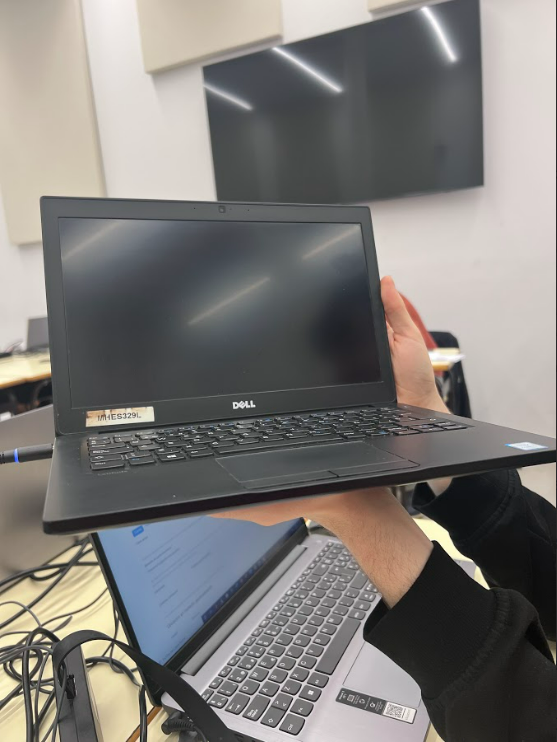

Menú principal
Fase 1
Reto 1
Reto 2
Reto 3
Reto 4
Fase 2
Reto 5
Reto 6
Reto 7.1
Reto 7.2
Reto 8
Reto 9
Reto 10
Fase 3
Reto 11
Reto 11: Proyecto Labdoo de reparación de portátiles

En esta parte deberemos ir a buscar los portátiles a un hub de recogida.
Una vez lo tengamos recepcionado debemos darlo de alta en la plataforma y empezar el proceso de limpieza y saneamiento.
Según el método escogido seguir los pasos de
https://platform.labdoo.org/es/content/how-sanitize-laptop
para llevar a cabo la instalación.
Una vez realizado el saneamiento, darlo como disponible en la plataforma.
Por último, enviamos de vuelta los portátiles a los hubs.